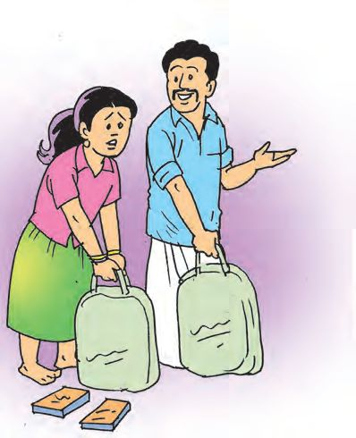
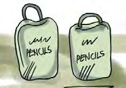
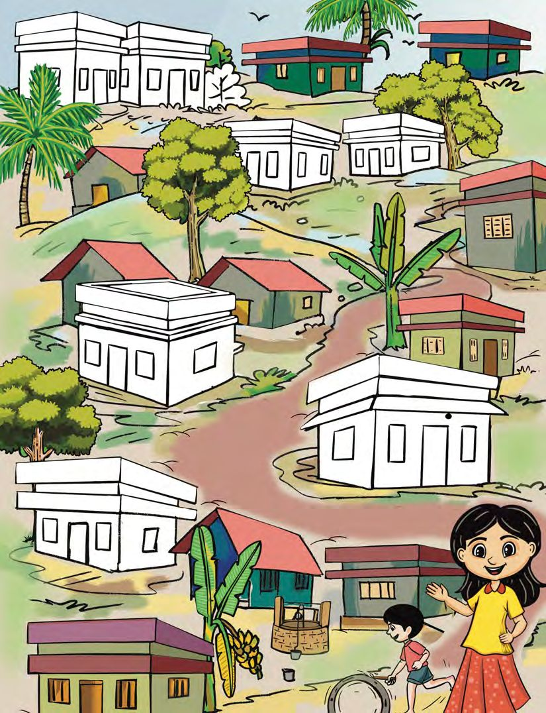

2
NUMBERS ARE OUR
FRIENDS!
Fill the cells
A game with tokens.
Fill the cells with tokens numbered from 1 to 100. Minha and
friends are playing this game. You can also play it. Your teacher
also will help you.
1
2
3
4
5
6
7
8
9
10
11
21
ST-391-2-MATHS (E)-3-VOL-1
55
100
Where will you put token 65 ? How did you find it out? Put the
tokens from 1 to 100 in the correct places. What is the connection
between the numbers in the yellow cells? Find other patterns
and colour them.
Pencil company
Minha’s father has a pencil company.
10 pencils are to be put in each packet.
And 10 packets in each box.
Number of pencils
in a packet
Number of packets
in a box
Total number of
pencils in a box
See how the pencils are boxed. Write the number of
pencils in the empty cells of the table below.
How many pencils would be there in 10 boxes?
19
Page 20
Figure fig_ch02_p020_01 (Page 20)

Figure fig_ch02_p020_02 (Page 20)

Figure fig_ch02_p020_03 (Page 20)
Mathematics Standard - III
Menma Store
Menma Store wants a
thousand pencils. Minha
and her father packed
two bags with the same
number of boxes in each.
How many pencils were
there in each bag?
Here, let me shift
some of the boxes to
this
So heavy !
How many?
How many pencils in each
bag?
700
300
100
300 + 700 =
100 + ......... =
1000
1000
........ + ........ = ........ + ........ =
1000
1000
Nanma Store
They gave 800 pencils to Nanma Store in two bags. How many
pencils in each bag?
Complete the table below.
Bag 1
Bag 2
Total
400
400
800
800
100
800
800
20
Page 21
Figure fig_ch02_p021_01 (Page 21)
Numbers Are Our Friends !
Split into hundreds
300 + 400
700
900
Equal split
600
100 +100
= ______
250 + _______
= 500
300 + 300
= ______
______+ ______ = 700
______+ ______ = 900
A mistake
Minha was asked to pack 870 pencils for the school, in packets
of 100 and 10. She filled 7 packets of 100 and 8 packets of 10.
How many did she pack in all? How many more are there to be
packed?
What I understood on
Information needed
reading the problem
to calculate the answer
Pension
200 rupees to the milkman, 500
rupees to the grocery, 100 rupees to
Minha : (to be given)
How much in
all?
I’ll deposit the 100
rupees Grandma gave
me, in my piggy bank.
I’ll give you one rupee
each day.
Minha wrote in a card, how much she had in her money box
each day. Can you complete it?
Using place
value card
What I got
each day
First day
1
0
0
Second day
1
0
0
Amount
100
1
100 + 1 = 101
Fifth day
Sixth day
Eighth day
Ninth day
Tenth day
Eleventh day
How much on the
twenty first day?
How much on the
fifty fourth day?
22
Page 23
Figure fig_ch02_p023_01 (Page 23)

Figure fig_ch02_p023_02 (Page 23)
Numbers Are Our Friends !
Health survey
A health survey is being conducted. They visit houses in the
order of their numbers. They reach Minha’s home and the house
number is 296. Write the numbers of the houses they are going
to visit next, in the correct order. You can also colour the houses.
Price of pencils
Anay bought a box of pencils from the factory where Minha’s
father’s shop. The price was Rs 300. In what denominations
would he have given the following notes and coins?
How I calculated
How my friend calculated
If each note and coin in the picture is taken together, how much
rupees would it be?
What is the number What is the number? Draw beads to show
any number you like
shown in the abacus?
and write it down.
Draw beads to make
it 764 in this picture.
A cheque
Look at the cheque Minha’s father wrote. The amount is written
only in words. Write it as a number.
Complete the table
Number
125
In words
Four hundred five
Eight hundred ninety
Three hundred forty two
Bank deposit
Look at the pay-in slip of a bank. We have to write the number of
notes of each denomination and the total amount.
Minha’s father gave 6 notes to deposit 800 rupees.
What notes would he have given?
Number of notes
I have 370 rupees remaining. The number
of notes is the sum of the digits of this
number. What notes do I have? And how
many of each?
Sum ten
The sum of the digits of 109 is 1 + 0 + 9 = 10.
What is the sum of the digits of 118 ?
Another number is 127, isn’t it?
How many
numbers are
there with
sum of digits
10 ?
Between 200 and 300
Between 300 and 400
How many three-digit
numbers in all?
I have 100 rupee and 10 rupee notes and
also 1 rupee coins. These make 456 rupees.
What is the minimum number of notes and
coins which make up 456 rupees?
How much rupees does 6 hundred
rupee notes, 8 ten rupee notes and
5 one rupee coins make?
What about 4 hundred rupee notes
and 9 one rupee coins?
3 hundred rupees
Corner PTA
Dad, don’t forget to buy
bananas. Tomorrow’s
corner PTA is here.
Father bought 6 kilogram of bananas for the corner PTA. The
price of one kilogram of bananas is 50 rupees. Father gave a 500
rupee note and got three notes in different denominations back.
What notes did he get?
How many of each?
Note
Brother’s gift
Minha’s brother gave her a gift. A
map showing the rivers of Kerala.
She liked it very much
See, how they have tabulated some
of the rivers of our state and their
lengths. Then write the answers to
the questions below.
Kozhikode
Kochi
Thiruvanathapuram
The longest river
The shortest river
River
Length
(km)
Manjeswaram river
16
Valapattanam river
110
Chaliyar
169
Bharathappuzha
209
Periyar
244
Pamba river
176
Achankovil river
128
Neyyar
56
Kallada river
121
How many rivers in the list are longer than Chaliyar? Write their
names in the order from the longest to the shortest.
the digit in one’s place is 1 more than the
number in the ten’s place.
a three-digit number
I am
Who am I?
sum of digits is 15
the digit in hundred’s place is 8 less than
the number in the one’s place.
Make a riddle of your own like this and write it in your notebook.
Compare with friends’ riddles and try to solve them.
31
Page 32
Figure fig_ch02_p032_01 (Page 32)
Mathematics Standard - III
3. School store
The school store needs 950 pencils. Minha gave 7 boxes and 6
packets of pencils. Each box has 100 pencils and in each packet,
10 pencils. How many more should she give to make it 950 ?
How did you calculate?
Suppose 950 pencils are given in boxes and packets.
Number of
packets